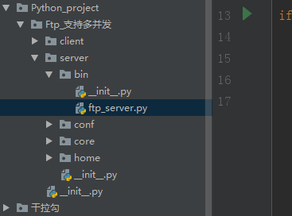

要求：
1.用户加密认证
2.允许同时多用户登录
3.每个用户有自己的家目录，且只能访问自己的家目录
4.对用户进行磁盘配额，每个用户的可用空间不同
5.允许用户在ftp server上随意切换目录
6.允许用户查看当前目录下的文件
7.允许上传和下载文件，并保证文件的一致性md5
8.文件传输过程中显示进度条
9.支持文件的断点续传使用：
1.启动ftp_server.py
2.创建用户，输入:用户名（默认密码是zhurui）
3.启动FTP服务器
4.启动客户端ftp_client.py
5.输入用户名和密码:alex zhurui | william zhurui
6.与服务器server交互：
ftp_server.py
#_*_ coding:utf-8 _*_
#Author :simon
import os
import sys
BASE_DIR = os.path.dirname(os.path.dirname(os.path.abspath(__file__)))
sys.path.append(BASE_DIR)
from core.main import Manager
if __name__ == '__main__':
Manager().run()accounts.ini（这个可以在执行中创建）
[william]
password = 39da56d2e7a994d38b9aaf329640fc6e
homedir = home/william
quota = 10
[zhurui]
password = 39da56d2e7a994d38b9aaf329640fc6e
homedir = home/zhurui
quota = 10
[simon]
password = 39da56d2e7a994d38b9aaf329640fc6e
homedir = home/simon
quota = 10settings.py
#_*_ coding:utf-8 _*_
# Author:Simon
# Datetime:2019/8/14 11:00
# Software:PyCharm
import os
BASE_DIR = os.path.dirname(os.path.dirname(os.path.abspath(__file__)))
ACCOUNTS_FILE = os.path.join(BASE_DIR, 'conf', 'accounts.ini')
HOST = '127.0.0.1'
PORT = 8080
MAX_CONCURRENT_COUNT = 10main.py
# _*_ coding:utf-8 _*_
#Author:Simon
from core.user_handle import UserHandle
from core.server import Ftpserver
class Manager():
def __init__(self):
pass
def start_ftp(self):
'''启动ftp_server端'''
server = Ftpserver()
server.run()
server.close()
def create_user(self):
'''创建用户'''
username = input('请输入要创建的用户>:').strip()
UserHandle(username).add_user()
def quit_func(self):
quit('get out...')
def run(self):
msg = '''\033[31;0m
1、启动ftp服务器
2、创建用户
3、退出\033[0m\n
'''
msg_dic = {'1': 'start_ftp', '2': 'create_user', '3': 'quit_func'}
while True:
print(msg)
num = input('请输入数字num>>>>:').strip()
if num in msg_dic:
getattr(self,msg_dic[num])()
else:
print('\033[1;31m请重新选择\033[0m')server.py
#-*- coding:utf-8 -*-
# Author:Simon
# Datetime:2019/8/13 21:02
# Software:PyCharm
import os
import socket
import struct
import pickle
import hashlib
import subprocess
import queue
from conf import settings
# from core.user_handle import UserHandle
from core.user_handle import UserHandle
from threading import Thread, Lock
class Ftpserver():
MAX_SOCKET_LISTEN = 5
MAX_RECV_SIZE = 8192
def __init__(self):
self.socket = socket.socket(socket.AF_INET, socket.SOCK_STREAM)
self.socket.bind((settings.HOST, settings.PORT))
self.socket.listen(self.MAX_SOCKET_LISTEN)
self.q = queue.Queue(settings.MAX_CONCURRENT_COUNT) # 可以配置最大并发数
def server_accept(self):
'''等待client连接'''
print('starting...')
while True:
self.conn,self.client_addr = self.socket.accept()
print('客户端地址:', self.client_addr)
#pool.submit(self.get_recv, self.conn)
#self.server_accept.close()
try:
# t = Thread(target=self.server_handle, args=(self.conn, )) #报这个错(TypeError: server_handle() takes 1 positional argument but 2 were given)
t = Thread(target=self.server_handle(), args=(self.conn, ))
self.q.put(t)
t.start()
except Exception as e:
print(e)
self.conn.close()
self.q.get()
def get_recv(self):
'''接收client发来的数据'''
return pickle.loads(self.conn.recv(self.MAX_RECV_SIZE))
def auth(self):
'''处理用户的认证请求
1、根据username读取accounts.ini文件，password相比，判断用户是否存在
2、将程序运行的目录从bin/ftp_server.py修改到用户home/alice,方便之后查询ls
3、给client返回用户的详细信息
'''
while True:
user_dic = self.get_recv()
username = user_dic.get('username')
user_handle = UserHandle(username)
user_data = user_handle.judge_user()
# 判断用户是否存在，返回列表
# 如[('password','202cb962ac59075b964b07152d234b70'),('homedir','home/alex'),('quota','100')]
if user_data:
if user_data[0][1] == hashlib.md5(user_dic.get('password').encode('utf-8')).hexdigest(): # 密码也相同
self.conn.send(struct.pack('i', 1)) #登录成功返回
self.username = username
self.homedir_path = '%s %s %s' %(settings.BASE_DIR, 'home', self.username)
os.chdir(self.homedir_path) #将程序运行的目录名修改到用户home目录下
self.quota_bytes = int(user_data[2][1]) * 1024 * 1024 #将用户配额大小从M改到字节
user_info_dic = {
'username': username,
'homedir': user_data[1][1],
'quota': user_data[2][1]
}
self.conn.send(pickle.dumps(user_info_dic)) #用户的详细信息发送到客户端
return True
else:
self.conn.send(struct.pack('i', 0))
else:
self.conn.send(struct.pack('i', 0))
def readfile(self):
'''读取文件，得到文件内容的bytes型'''
with open(self.filepath, 'rb') as f:
filedata = f.read()
return filedata
def getfile_md5(self):
'''对文件内容md5'''
return hashlib.md5(self.readfile()).hexdigest()
def get(self):
'''从server下载文件到client
'''
if len(self.cmds) > 1:
filename = self.cmds[1]
filepath = os.path.join(os.getcwd(),filename) #os.getcwd()得到当前工作目录
if os.path.isfile(filepath): #判断文件是否存在
exist_file_size = struct.unpack('i', self.conn.recv(4))[0]
self.filepath = filepath
header_dic = {
'filename': filename,
'file_md5': self.getfile_md5(),
'file_size': os.path.getsize(self.filepath)
}
header_bytes = pickle.dumps(header_dic)
if exist_file_size: #表示之前被下载过一部分
self.conn.send(struct.pack('i', len(header_bytes)))
self.conn.send(header_bytes)
if exist_file_size != os.path.getsize(self.filepath):
with open(self.filepath, 'rb') as f:
f.seek(exist_file_size)
for line in f:
self.conn.send(line)
else:
print('断电和文件本身大小一样')
else: #文件第一次下载
self.conn.send(struct.pack('i', len(header_bytes)))
self.conn.send(header_bytes)
with open(self.filepath, 'rb') as f:
for line in f:
self.conn.send(line)
else:
print('当前目录下文件不存在')
self.conn.send(struct.pack('i',0))
else:
print('用户没用输入文件名')
def recursion_file(self,menu):
'''递归查询用户home/alice目录下的所有文件，算出文件的大小'''
res = os.listdir(menu) #指定目录下所有的文件和目录名
for i in res:
path = '%s %s' % (menu, i)
if os.path.isdir(path): #判断指定对象是否为目录
self.recursion_file(path)
elif os.path.isfile(path):
self.home_bytes_size += os.path.getsize(path)
def current_home_size(self):
'''得到当前用户home/alice目录的大小，字节/M'''
self.home_bytes_size = 0
self.recursion_file(self.homedir_path)
print('字节：', self.home_bytes_size) # 单位是字节
home_m_size = round(self.home_bytes_size / 1024 /1024, 1)
print('单位M:', home_m_size) #单位是: M
def put(self):
'''从client上传文件到server当前工作目录下'''
if len(self.cmds) > 1:
state_size = struct.unpack('i',self.conn.recv(4))[0]
if state_size:
self.current_home_size() #算出了home下已被占用的大小self.home_bytes_size
header_bytes = self.conn.recv(struct.unpack('i', self.conn.recv(4))[0])
header_dic = pickle.loads(header_bytes)
print(header_dic)
filename = header_dic.get('filename')
file_size = header_dic.get('file_size')
file_md5 = header_dic.get('file_md5')
upload_filepath = os.path.join(os.getcwd(), filename)
self.filepath = upload_filepath #为了全局变量读取文件算md5时方便
if os.path.exists(upload_filepath): #文件已经存在
self.conn.send(struct.pack('i', 1))
has_size = os.path.getsize(upload_filepath)
if has_size == file_size:
print('文件已经存在')
self.conn.send(struct.pack('i', 0))
else: #上次没有传完，接着继续传
self.conn.send(struct.pack('i', 1))
if self.home_bytes_size + int(file_size - has_size) > self.quota_bytes:
print('超出了用户的配额')
self.conn.send(struct.pack('i', 0))
else:
self.conn.send(struct.pack('i',1))
self.conn.send(struct.pack('i', has_size))
with open(upload_filepath, 'ab') as f:
f.seek(has_size)
while has_size < file_size:
recv_bytes = self.conn.recv(self.MAX_RECV_SIZE)
f.write(recv_bytes)
has_size += len(recv_bytes)
self.conn.send(struct.pack('i', has_size)) #为了显示进度条
if self.getfile_md5() == file_md5: #判断下载下来的文件MD5值和server传过来的MD5值是否一致
print('\033[1;32m上传成功\033[0m')
self.conn.send(struct.pack('i', 1))
else:
print('\033[1;32m上传失败\033[0m')
self.conn.send(struct.pack('i', 0))
else: #第一次上传
self.conn.send(struct.pack('i', 0))
if self.home_bytes_size + int(file_size) > self.quota_bytes:
print('\033[1;32m超出了用户的配额\033[0m')
self.conn.send(struct.pack('i', 0))
else:
self.conn.send(struct.pack('i', 1))
with open(upload_filepath, 'wb') as f:
recv_size = 0
while recv_size < file_size:
file_bytes = self.conn.recv(self.MAX_RECV_SIZE)
f.write(file_bytes)
recv_size += len(file_bytes)
self.conn.send(struct.pack('i', recv_size)) #为了进度条的显示
if self.getfile_md5() == file_md5: #判断下载下来的文件MD5值和server传过来的MD5值是否一致
print('\033[1;32m上传成功\033[0m')
self.conn.send(struct.pack('i', 1))
else:
print('\033[1;32m上传失败\033[0m')
self.conn.send(struct.pack('i', 0))
else:
print('待传的文件不存在')
else:
print('用户没有输入文件名')
def ls(self):
'''查询当前工作目录下，先返回文件列表的大小，再返回查询的结果'''
subpro_obj = subprocess.Popen('dir', shell=True,
stdout=subprocess.PIPE,
stderr=subprocess.PIPE)
stdout = subpro_obj.stdout.read()
stderr = subpro_obj.stderr.read()
self.conn.send(struct.pack('i', len(stdout + stderr)))
self.conn.send(stdout)
self.conn.send(stderr)
def mkdir(self):
'''在当前目录下，增加目录'''
if len(self.cmds) > 1:
mkdir_path = os.path.join(os.getcwd(),self.cmds[1])
if not os.path.exists(mkdir_path): #查看目录名是否存在
os.mkdir(mkdir_path)
print('增加目录成功')
self.conn.send(struct.pack('i', 1)) #增加目录成功，返回1
else:
print('目录名已存在')
self.conn.send(struct.pack('i', 0)) #失败返回0
else:
print('用户没有输入目录名')
def cd(self):
'''切换目录'''
if len(self.cmds) > 1:
dir_path = os.path.join(os.getcwd(), self.cmds[1])
if os.path.isdir(dir_path) :#查看是否是目录名
previous_path = os.getcwd() #拿到当前工作的目录
os.chdir(dir_path) #改变工作目录到 . . .
target_dir = os.getcwd()
if self.homedir_path in target_dir: #判断homedir_path是否在目标目录
print('切换成功')
self.conn.send(struct.pack('i', 1)) #切换成功返回1
else:
print('切换失败') #切换失败后，返回到之前的目录下
os.chdir(previous_path)
self.conn.send(struct.pack('i', 0))
else:
print('要切换的目录不在该目录下')
self.conn.send(struct.pack('i', 0))
else:
print('没有传入切换的目录名')
def remove(self):
'''删除指定的文件，或者空文件夹'''
if len(self.cmds) > 1:
file_name = self.cmds[1]
file_path = '%s\%s' %(os.getcwd(), file_name)
if os.path.isfile(file_path):
os.remove(file_path)
self.conn.send(struct.pack('i', 1))
elif os.path.isdir(file_path): #删除空目录
if not len(os.listdir(file_path)):
os.removedirs(file_path)
print('删除成功')
self.conn.send(struct.pack('i', 1))
else:
print('文件夹非空，不能删除')
self.conn.send(struct.pack('i', 0))
else:
print('不是文件也不是文件夹')
self.conn.send(struct.pack('i', 0))
else:
print('没有输入要删除的文件')
def server_handle(self):
'''处理与用户的交互指令'''
if self.auth():
print('\033[1;32m用户登陆成功\033[0m')
while True:
try: #try ...except 适合windows client断开
user_input = self.conn.recv(self.MAX_RECV_SIZE).decode('utf-8')
# if not user_input: continue #这里适合 linux client断开
self.cmds = user_input.split()
if hasattr(self,self.cmds[0]):
getattr(self,self.cmds[0])()
else:
print('\033[1;31请用户重复输入\033[0m')
except Exception:
break
def run(self):
self.server_accept()
def close(self):
self.socket.close()
#if __name__ == '__main__':
#pool = ThreadPoolExecutor(10)user_handle.py
#_*_ coding:utf-8 _*_
# Author:Simon
# Datetime:2019/8/14 10:26
# Software:PyCharm
import configparser
import hashlib
import os
from conf import settings
class UserHandle():
def __init__(self,username):
self.username= username
self.config = configparser.ConfigParser() #先生成一个对象
self.config.read(settings.ACCOUNTS_FILE)
@property
def password(self):
'''生成用户的默认密码 zhurui'''
return hashlib.md5('zhurui'.encode('utf-8')).hexdigest()
@property
def quota(self):
'''生成每个用户的磁盘配额'''
quota = input('请输入用户的磁盘配额大小>>>:').strip()
if quota.isdigit():
return quota
else:
exit('\033[1;31m磁盘配额必须是整数\033[0m')
def add_user(self):
'''创建用户，存到accounts.ini'''
if not self.config.has_section(self.username):
print('creating username is : ', self.username)
self.config.add_section(self.username)
self.config.set(self.username, 'password', self.password)
self.config.set(self.username, 'homedir', 'home/'+self.username)
self.config.set(self.username, 'quota', self.quota)
with open(settings.ACCOUNTS_FILE, 'w') as f:
self.config.write(f)
os.mkdir(os.path.join(settings.BASE_DIR, 'home', self.username)) #创建用户的home文件夹
print('\033[1;32m创建用户成功\033[0m')
else:
print('\033[1;32m用户已存在\033[0m')
def judge_user(self):
'''判断用户是否存在'''
if self.config.has_section(self.username):
return self.config.items(self.username)
else:
returndownload文件是储存下载的文件；upload是上传文件的储存库（download里边可以不放东西，等待下载即可；upload里边放你准备上传给服务端的文件）
ftp_client.py
#_*_ coding:utf-8 _*_
# Author:Simon
# Datetime:2019/8/14 11:12
# Software:PyCharm
import os
import sys
import socket
import struct
import pickle
import hashlib
class Ftpclient():
HOST = '127.0.0.1' #服务器IP
PORT = 8080 #服务端的端口
MAX_RECV_SIZE = 8192
DOWNLOAD_PATH = os.path.join(os.path.dirname(os.path.abspath(__file__)), 'download')
UPLOAD_PATH = os.path.join(os.path.dirname(os.path.abspath(__file__)), 'upload')
def __init__(self):
self.socket = socket.socket(socket.AF_INET, socket.SOCK_STREAM)
self.connect()
def connect(self):
'''连接服务端server'''
try:
self.socket.connect((self.HOST, self.PORT))
except Exception:
exit('\033[1;31mserver还未启动\033[0m')
def get_recv(self):
'''获取server返回的数据'''
return pickle.loads(self.socket.recv(self.MAX_RECV_SIZE))
def auth(self):
'''用户认证'''
count = 0
while count < 3:
name = input('请输入用户名>>:').strip()
if not name: continue
password = input('请输入密码>>:').strip()
user_dic = {
'username':name,
'password':password
}
self.socket.send(pickle.dumps(user_dic)) #把用户名和密码发送给server
res = struct.unpack('i',self.socket.recv(4))[0]
if res: #接收返回的信息，并判断
print('welcome'.center(20,'-'))
user_info_dic = self.get_recv()
self.username = user_info_dic.get('username')
print(user_info_dic)
return True
else:
print('\033[1;31m用户名或者密码不对！\033[0m')
count += 1
def readfile(self):
'''读取文件，得到的文件内容的bytes型'''
with open(self.filepath, 'rb') as f:
filedata = f.read()
return filedata
def getfile_md5(self):
'''对文件内容md5'''
return hashlib.md5(self.readfile()).hexdigest()
def progress_bar(self, num, get_size, file_size):
'''进度条显示'''
float_rate = get_size / file_size
# rate = str(float_rate * 100)[:5] # 95.85%
rate = round(float_rate * 100,2) # 95.85%
if num == 1: #1表示下载
sys.stdout.write('\r已下载:\033[1;32m{0}%\033[0m'.format(rate))
elif num == 2: #2 表示上传
sys.stdout.write('\r已上传:\033[1;32m{0}%\033[0m'.format(rate))
sys.stdout.flush()
def get(self):
'''从server下载文件到client'''
if len(self.cmds) > 1:
filename = self.cmds[1]
self.filepath = os.path.join(self.DOWNLOAD_PATH, filename) #结合目录名和文件名
if os.path.isfile(self.filepath): #如果文件存在，支持断点续传
temp_file_size = os.path.getsize(self.filepath)
self.socket.send(struct.pack('i', temp_file_size))
header_size = struct.unpack('i', self.socket.recv(4))[0]
if header_size: #如果存在
header_dic = pickle.loads(self.socket.recv(header_size))
print(header_dic)
filename = header_dic.get('filename')
file_size = header_dic.get('file_size')
file_md5 = header_dic.get('file_md5')
if temp_file_size == file_size:
print('\033[1;32m文件已经存在\033[0m')
else:
print('\033[1;33m正在进行断点续传....\033[0m')
download_filepath = os.path.join(self.DOWNLOAD_PATH, filename)
with open(download_filepath, 'ab') as f:
f.seek(temp_file_size)
get_size = temp_file_size
while get_size < file_size:
file_bytes = self.socket.recv(self.MAX_RECV_SIZE)
f.write(file_bytes)
get_size += len(file_bytes)
self.progress_bar(1, get_size, file_size) # 1表示下载
if self.getfile_md5() == file_md5: #判断下载下来的文件MD5值和server传过来的MD5值是否一致
print('\n\033[1;32m下载成功\033[0m')
else:
print('\n\033[1;32m下载文件大小与源文件大小不一致，请重新下载，将会支持断点续传033[0m')
else:
print('\n\033[1;31m该文件，之前被下载了一部分，但是server端的该文件，已被删除，无法再次下载\033[0m')
else: #文件第一次下载
self.socket.send(struct.pack('i', 0)) # 0 表示之前没有下载过
header_size = struct.unpack('i', self.socket.recv(4))[0]
if header_size:
header_dic = pickle.loads(self.socket.recv(header_size))
print(header_dic)
filename = header_dic.get('filename')
file_size = header_dic.get('file_size')
file_md5 = header_dic.get('file_md5')
download_filepath = os.path.join(self.DOWNLOAD_PATH, filename)
with open(download_filepath, 'wb') as f:
get_size = 0
while get_size < file_size:
file_bytes = self.socket.recv(self.MAX_RECV_SIZE)
f.write(file_bytes)
get_size += len(file_bytes)
self.progress_bar(1, get_size, file_size) #1表示下载
print('总大小:%s已下载:%s'% (file_size, get_size))
if self.getfile_md5() == file_md5: #判断下载下来的文件MD5值和server传过来的MD5值是否一致
print('\n\033[1;32m恭喜你，下载成功\033[0m')
else:
print('\n\033[1;32m下载失败，再次下载支持断点续传\033[0m')
else:
print('\n\033[1;32m当前目录下，文件不存在\033[0m')
else:
print('用户没有输入文件名')
def put(self):
'''往server自己的home/alice目录下，当前工作的目录下上传文件'''
if len(self.cmds) > 1: #确保用户输入了文件名
filename = self.cmds[1]
filepath = os.path.join(self.UPLOAD_PATH, filename)
if os.path.isfile(filepath):
self.socket.send(struct.pack('i', 1))
self.filepath = filepath
filesize = os.path.getsize(self.filepath)
header_dic = {
'filename': filename,
'file_md5': self.getfile_md5(),
'file_size': filesize
}
header_bytes = pickle.dumps(header_dic)
self.socket.send(struct.pack('i',len(header_bytes)))
self.socket.send(header_bytes)
state = struct.unpack('i', self.socket.recv(4))[0]
if state: #已经存在了
has_state = struct.unpack('i', self.socket.recv(4))[0]
if has_state:
quota_state = struct.unpack('i',self.socket.recv(4))[0]
if quota_state:
has_size = struct.unpack('i', self.socket.recv(4))[0]
with open(self.filepath, 'rb') as f:
f.seek(has_size)
for line in f:
self.socket.send(line)
recv_size = struct.unpack('i', self.socket.recv(4))[0]
self.progress_bar(2, recv_size, filesize)
success_state = struct.unpack('i', self.socket.recv(4))[0]
'''这里一定要判断，因为最后一次send(line)之后等待server返回，
server返回，最后一次的recv_size==file_size，但client已经跳出了循环，
所以在for外面接收的success_state其实时file_size,这种情况只针对大文件
'''
if success_state == filesize:
success_state = struct.unpack('i', self.socket.recv(4))[0]
if success_state:
print('\n\033[1;32m恭喜您，上传成功\033[0m')
else:
print('\n\033[1;32m上传失败\033[0m')
else: #超出了配额
print('\033[1;31m超出了用户的配额\033[0m')
else: #存在的大小和文件大小一致，不必再传
print('\033[1;31m当前目录下，文件已经存在\033[0m')
else: #第一次传
quota_state = struct.unpack('i', self.socket.recv(4))[0]
if quota_state:
with open(self.filepath, 'rb') as f:
send_bytes = b''
for line in f:
self.socket.send(line)
send_bytes += line
print('总大小:%s 已上传：%s' % (filesize, len(send_bytes)))
recv_size = struct.unpack('i',self.socket.recv(4))[0]
self.progress_bar(2, recv_size, filesize)
succes_state = struct.unpack('i',self.socket.recv(4))[0]
if succes_state == filesize:
succes_state = struct.unpack('i',self.socket.recv(4))[0]
if succes_state:
print('\n\033[1;32m恭喜您，上传成功\033[0m')
else:
print('\n\033[1;32m上传失败\033[0m')
else: #超出了配额
print('\033[1;31m超出了用户的配额\033[0m')
else: #文件不存在
print('\033[1;31m文件不存在\033[0m')
self.socket.send(struct.pack('i', 0))
else:
print('用户没有输入文件名')
def ls(self):
'''查询当前工作目录下，文件列表'''
dir_size = struct.unpack('i', self.socket.recv(4))[0]
recv_size = 0
recv_bytes = b''
while recv_size < dir_size:
temp_bytes = self.socket.recv(self.MAX_RECV_SIZE)
recv_bytes += temp_bytes
recv_size += len(temp_bytes)
print(recv_bytes.decode('gbk')) #gbk适合windows，utf-8适合linux
def mkdir(self):
'''增加目录'''
if len(self.cmds) > 1:
res = struct.unpack('i', self.socket.recv(4))[0]
if res:
print('\033[1;32m在当前目录下，增加目录: %s 成功\033[0m'% self.cmds[1])
else:
print('\033[1;31m增加目录失败\033[0m')
else:
print('没有输入要增加的目录名')
def cd(self):
'''切换目录'''
if len(self.cmds) > 1:
res = struct.unpack('i', self.socket.recv(4))[0]
if res:
print('\033[1;32m切换成功\033[0m')
else:
print('\033[1;32m切换失败\033[0m')
else:
print('没有输入要切换的目录名')
def remove(self):
'''删除指定的文件，或者文件夹'''
if len(self.cmds) > 1:
res = struct.unpack('i', self.socket.recv(4))[0]
if res:
print('\033[1;32m删除成功\033[0m')
else:
print('\033[1;31m删除失败\033[0m')
else:
print('没有输入要删除的文件')
def interactive(self):
'''与server交互'''
if self.auth():
while True:
try:
user_input = input('[%s]>>>:'%self.username)
if not user_input:continue
self.socket.send(user_input.encode('utf-8'))
self.cmds = user_input.split()
if hasattr(self, self_cmds[0]):
getattr(self, self.cmds[0])()
else:
print('请重新输入')
except Exception as e: #server关闭了
print(e)
break
def close(self):
self.socket.close()
if __name__ == '__main__':
ftp_client = Ftpclient()
ftp_client.interactive()
ftp_client.close()